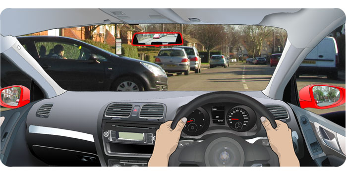

Try to avoid the need to carry out an emergency stop by always:
- Planning ahead
- Keeping the correct stopping distance from the traffic ahead
- Keeping to a safe speed for the road and traffic conditions
Try to drive so that you could stop safely in an emergency by:
- Checking your mirrors regularly
- Driving extra cautiously when there is closely following traffic. (ie.increasing distance from traffic ahead and gently slowing down approaching hazards)
However careful you are, there is always the possibility that a situation will arise where you need to stop the car instantly. On your test, the examiner may simulate this scenario and ask you to demonstrate an emergency stop. They will pull you over beforehand and explain the signal they will use, usually a hand thrust forward with the exclamation to stop.
When stopping in an emergency:
- Checking the mirrors is not a priority as it could delay your braking. By driving with the care and attention described above, you should be aware of following traffic already.
- Press the foot brake firmly followed by the clutch. Use plenty of pressure but apply it progressively rather than stamping which could cause a skid.
- Keep two hands on the steering wheel to maintain control.

Once you've stopped:
- Secure the car with the handbrake.
- Select neutral.
- Check the mirrors to see how the traffic behind has responded.
Move off safely when safe by:
- Preparing the car.
- Making an all round check including both blind spots. (As you are likely to be positioned centrally within your lane, it is important to check over both shoulders for passing cyclists).
ABS (Anti Lock Braking System)
As the name suggests, ABS is a braking feature which prevents the wheels from locking up in the event of a skid. On sensing a skid, the ABS mechanism will release and re apply the brakes many times a second. The resulting traction enables steering of the vehicle and a slightly reduced stopping distance.
ABS has been required on all new cars within the EU since 2004 so if your vehicle is older than this, check to see if it is fitted.
Skidding
Skidding occurs when the forces of braking and/or steering are very sudden and is more likely to happen when the road surface is loose or wet. In these conditions, lower your speed so that your braking, in the event of an emergency, wouldn't need to be so severe.
If you do find yourself in a skid then you should react according to whether your vehicle is equipped with ABS or not.
With ABS - Maintain pressure on the brake pedal until the vehicle stops. You will notice a strong pulsing sensation through the pedal which is normal.
Without ABS - Use cadence braking which means easing off of the brake slightly and quickly re applying with a little less pressure. Repeat this as necessary.